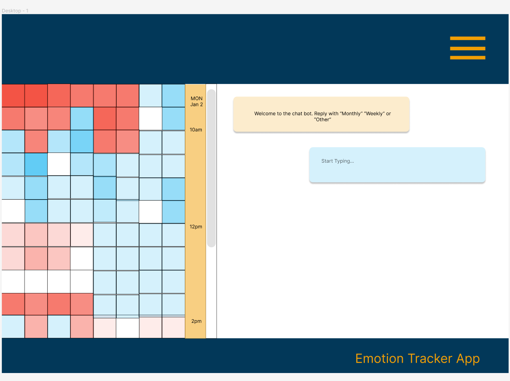

Designing an app for social good: "Create an app to help teenagers better understand their emotions."
The thought process behind the Emotion Tracker app was to create a simplistic user interface to input basic data throughout the day. The initial design would be for a mobile app, with plans to eventually expand the dashboard for desktops and tablets, and also offer a scaled-down version for a smart watch.
This project began in October 2022, and continued throughout the remainder of the year. Evan Madden is both the UX Researcher and Designer. Evan works full time as a web developer and conducts UX research during free time.
Prior to the first usability study, it became obvious that the setup of the app would require a fair amount of explanation. The initial solution was to offer a large array of choices, which would allow the user to focus on specific emotions, with the idea that the app’s parameters would be preset by mental health professionals. Two buttons, one red and one blue, would represent a cluster of chosen emotions, based on a predetermined categorization scale or range associated with hot and cool colors.
The research goals were to determine the feasibility of the “button tap” design, and if the user interface would be both easy to use and physically possible.
Usability studies were conducted with both paper and digital prototypes, with 5-7 participants per study.
Problem Statement:"The user is a teenager, who wants to better understand their emotions, but needs a discrete solution, so that they can better enjoy social activities."
The usability studies were conducted to determine the feasibility of the button-tapping design. The original design was for three buttons, but it became quickly obvious that a two-button design was more practical from a physical standpoint, and would be more readily adaptable for other assistive devices. The high-fidelity prototype was designed to simulate the buttons enlarging on contact, and then returning to their initial state.
The desktop and tablet versions of the design are focused around the chatbot and analysis functions of the app. The enlarged screen size offers an opportunity to conduct a chat while also scrolling through the graphical data analysis. The idea of the automated chat is to run the user through a series of prompts to help them narrow down solutions based on the user input.
Pat: Wants to participate in more group activities in and out of school. Would like to feel more confident as a member of school athletic programs. Feels frustration in communicating emotions to parents.
Frankie: Frankie’s grandparents are loving and have provided a good home and upbringing. Frankie has no siblings and a small group of friends. School is socially challenging and Frankie would like to understand their mood swings better.
Through the process of conducting usability studies, and in particular with prompting the participants, it became clear that a thorough orientation process would be useful during account setup. If we frontloaded the process with most of the work, the daily use of the app would be much simpler. The data collected would be processed through predetermined algorithms, and the chat/analysis functionality could be conducted through AI.
The primary accessibility consideration was making the app easy to use and with the minimal amount of steps or effort required. The tap function could be employed by a wide range of assistive devices because of its simplicity. The second accessibility consideration would be the color contrast and readability of the graphical representation of the data collected. Because the design uses subtle shading to represent the volume of taps, there are accessibility and usability improvements that need to be addressed for ongoing development.